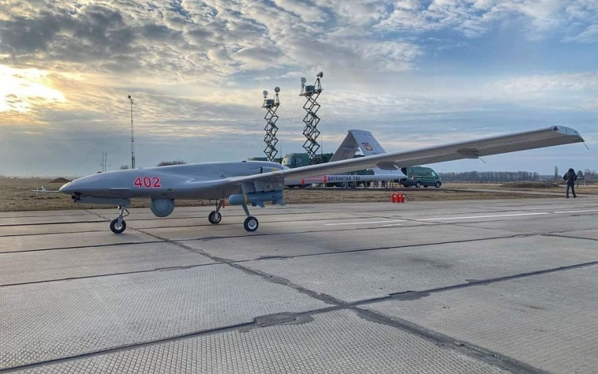

Що таке "Байрактар" - які його головні характеристики?
Розвідувально-ударні дрони Bayraktar TB2, які постачаються з Туреччини, дуже добре зарекомендували себе у бою з російськими окупантами.
Що таке "Байрактар", які основні характеристики цих дронів та де вони можуть використовуватися?

Про це повідомляють Новини картографії від Візіком з посиланням на ТСН.
Що таке "Байрактар": основні відомості
Bayraktar TB2 - це ударний оперативно-тактичний безпілотний літальний апарат (БПЛА), який розробляється на території Туреччини. Здатний розганятися до 200 км за годину та підніматися на висоту понад 8 км. "Байрактар" скидає авіабомби та керовані протитанкові ракети. При цьому дрон може протягом доби перебувати в польоті.
Свою назву безпілотник отримав на честь засновника компанії Baykar (яка займається виготовленням розвідувально-ударних дронів) - Оздеміра Байрактара. В перекладі з турецької назву можна перекласти як "прапороносець".
Україна підписала угоду про купівлю Bayraktar TB2 у Туреччини на початку 2019 року. А вже навесні 2021 року БПЛА здійснили свої перші польоти над східними територіями нашої країни. Вперше в бойових діях дрон "Байрактар" використали під час обстрілу окупантами села Гранітне, що на Донеччині. Тоді росіянам не вдалося навіть засікти безпілотник, щоб його знищити.
Головні характеристики "Байрактару"
- Головні характеристики "Байрактару"
- Вантажність - 55 кг;
- Максимальна злітна маса - 650 кг;
- Розмах крила - 12 метрів;
- Максимальна швидкість - 222 км/год;
- Крейсерська швидкість - 130 км/год;
- Радіус дії - залежить від версії (перша версія - 150 км, оновлена версія - 300 км);
- Автономність - 24 години;
- Стеля - 8200 метрів.
Україна має обидві версії "Байрактар": дрони, які працюють на 150 км, і ті безпілотники, які мають радіус дії 300 км. Також БПЛА "Bayraktar TB2" відрізняються високоточною системою оптичного наведення на ціль. Вони оснащуються інфрачервоною та електронно-оптичною камерою, лазерним дальноміром.
Де використовуються "Байрактари"
Розвідувально-ударні дрони Bayraktar TB2 можуть знищувати все: наприклад, різноманітні зенітно-ракетні комплекси типу "Град" або "Бук", також танки, цілі колони техніки. Навіть за допомогою більш старої версії (яка має радіус дії 150 км) можна вести постійне чергування в повітрі і швидко висуватися для пуску ракети тоді, коли була виявлена ціль.
Один "Байрактар" може нести дві керовані протитанкові ракети UMTAS (лазерне наведення та дальність пуску від 0,5 до 8 км) або чотири планувальні корегувальні високоточні авіабомби Roketsan MAM-C, Bozok або Roketsan MAM-L (здатні вразити рухому та нерухому ціль на відстані до 8 км).
Саме завдяки їхнім характеристикам ці безпілотники несуть надзвичайну небезпеку для ворожої армії. "Байрактари" швидкі, легкі, маневрені, смертоносні, а також ними просто керувати. Окупантам важко знешкодити ці розвідувально-ударні дрони, адже їх практично неможливо засікти.